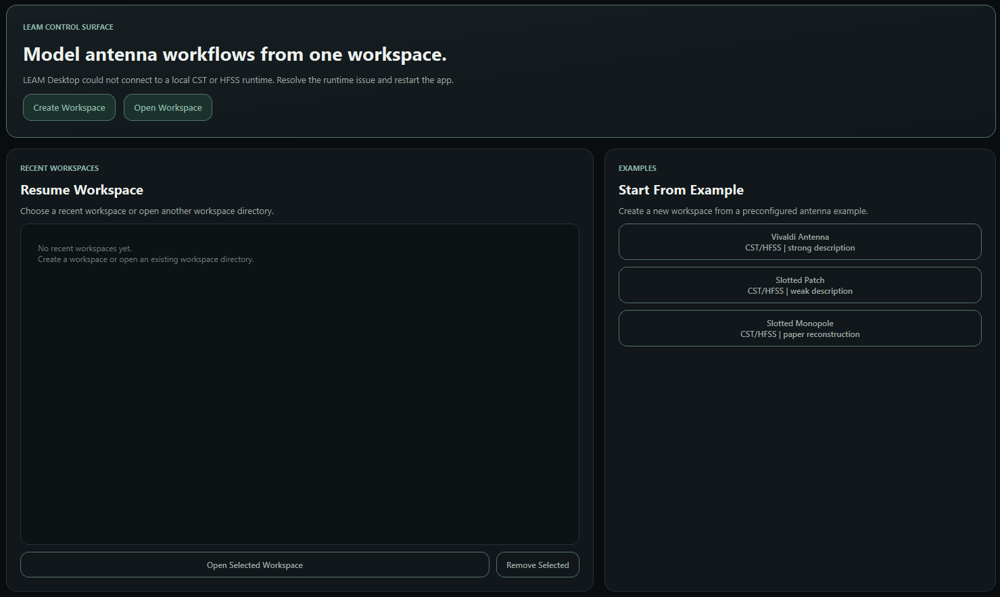

LLM Layer
LEAM currently uses OpenAI models for multimodal antenna understanding and model generation, with room for future LLM API support.
LLM-Enabled Antenna Modeling
LEAM is an open-source research toolkit for parameterized antenna modeling. It supports both CST and HFSS, provides a Windows desktop interface for interactive use, and can connect naturally with downstream simulation and optimization workflows.
LEAM works from textual and image-based antenna descriptions drawn from technical reports, research papers, patents, and other engineering documents, helping users move from descriptive source material to analyzable EM models.
LEAM can export parameterized CST and HFSS antenna models together with structured intermediate representations such as parameters and geometry-related modeling data. This makes antenna models easier to store, review, reuse, and extend, while also supporting the digitization of legacy antenna design data and the activation of underused engineering assets.
Overview
LEAM combines an LLM layer, simulator-facing modeling workflows, and structured intermediate data so that antenna descriptions can be turned into reusable EM modeling assets rather than one-off generation results.
In practical terms, the stack is built around OpenAI-driven multimodal understanding, CST and HFSS support, a Windows desktop interface, and structured parameter or geometry data that can be stored, reviewed, and reused across projects.
LEAM currently uses OpenAI models for multimodal antenna understanding and model generation, with room for future LLM API support.
LEAM supports both CST and HFSS, translating antenna descriptions into EM models inside the tools engineers already use.
A Windows desktop GUI and structured parameter or geometry data make modeling sessions easier to review, store, and reuse.
Navigation
The README gives the short version. The docs set is split by use case so antenna engineers can go straight to desktop onboarding, while script users can jump directly to the Python surface.
The main documentation now lives in three focused pages: desktop onboarding, workflow reference, and Python API.
Install LEAM, set OPENAI_API_KEY, launch
leam-desktop, and understand the normal first-run
path.
Read the exact desktop behavior for workspaces, optional branches, attachment handling, and execution gates.
Use the Python API page for backend wrappers, runtime helpers, and programmatic access to built-in examples.
Workflow
LEAM organizes antenna modeling into staged generation, review, and optional execution steps.
Quick Start
LEAM Desktop currently targets Windows, requires an OpenAI API key, and needs at least one local CST or HFSS install.
Normal users do not need a virtual environment or a separate configure step.
LEAM will auto-detect CST and HFSS on first launch. If `leam-desktop` is not on PATH yet, run `py -3.11 -m leam.desktop`.
